Od Fourierove vrste do DFT: teorija in numerični izračun v praksi#
Ta zvezek je praktični priročnik za uporabo Fourierove transformacije pri analizi meritev. Osredotoča se na to, kaj nam rezultati povedo in kako jih pravilno preberemo.
Rdeča nit: Fourierova vrsta → Fourierova integralna transformacija → DFT v praksi.
import numpy as np
import matplotlib.pyplot as plt
from fourier_grafi import *
plt.rcParams['figure.figsize'] = (13, 4)
plt.rcParams['font.size'] = 12
1. del: Fourierova vrsta#
Vsak periodičen signal s periodo \(T\) lahko zapišemo kot vsoto harmonskih komponent pri frekvencah \(f_n = n\,f_0 = n\,\frac{1}{T}\), kjer je \(T\) osnovna perioda signala.
Note
Koeficient \(c_n\) je kompleksno število: njegova amplituda \(|c_n|\) pove amplitudo \(n\)-tega harmonika, njegov argument \(\angle c_n\) pa fazo.
Povezava z realno obliko (\(a_n\) in \(b_n\)):
Kompleksna oblika je kompaktnejša in računsko ugodnejša.
Vsota teče tudi po negativnih \(n\) - posledica so negativne frekvence pri rezultatu Fourierove transformacije.
Simetrijske lastnosti#
Za realne izmerjene signale velja \(c_{-n} = c_n^*\), kar pomeni:
Vrsta signala |
Koeficienti \(c_n\) |
|---|---|
Realen, splošen |
\(c_{-n} = c_n^*\) - amplitudni spekter je simetričen |
Realen + sod (\(\cos \rightarrow a_n\)) |
\(c_n\) so čisto realni |
Realen + lih (\(\sin \rightarrow b_n\)) |
\(c_n\) so čisto imaginarni |
V praksi: ker so vsi izmerjeni signali realni, je amplitudni spekter pri negativnih frekvencah vedno zrcalna kopija pozitivnih. Zato ponavadi prikažemo le enostranski spekter.
Pripravimo funkcijo za numerični izračun Fourierovih koeficientov#
def koeficient_cn(x, t, T, n):
"""n-ti koeficient Fourierove vrste signala x(t) s periodo T."""
integrand = x * np.exp(-1j * 2 * np.pi * n / T * t)
return np.trapezoid(integrand, t) / T
In še za izračun Fourierove vrste#
def vrsta_cn(x, t_perioda, T, n_max):
"""Delna vsota Fourierove vrste s koeficienti c_n do harmonika n_max.
Vrne realni del; imaginarni del je ~0 za realne signale."""
koeficienti = [koeficient_cn(x, t_perioda, T, n) for n in range(-n_max, n_max+1)]
eksponenti = [np.exp(1j * 2 * np.pi * n / T * t_perioda) for n in range(-n_max, n_max+1)]
return np.real(np.dot(koeficienti, eksponenti))
Primer 1.1 - Rekonstrukcija pravokotnega signala s Fourierovo vrsto
Spodnji pravokotni signal je liha funkcija, koeficienti \(c_n\) pa so čisto imaginarni.
Rekonstruiramo ga z vsoto naraščajočega števila harmonikov in opazujemo konvergenco.
T = 1.0
f0 = 1.0 / T
t_perioda = np.linspace(0, T, 500, endpoint=False)
kvadrat_perioda = np.sign(np.sin(2 * np.pi * f0 * t_perioda))
# Rekonstrukcija z različnim številom harmonikov, koeficienti c_n numerično
rekonstrukcije = []
for N_harm in [1, 3, 7, 21]:
rek = vrsta_cn(kvadrat_perioda, t_perioda, T, N_harm)
rekonstrukcije.append((f'{N_harm} harmonikov', rek))
plot_cas_primerjava(t_perioda, kvadrat_perioda, rekonstrukcije,
ref_label='Pravi pravokotni signal',
title='Rekonstrukcija pravokotnega signala s Fourierovo vrsto')
plt.show()
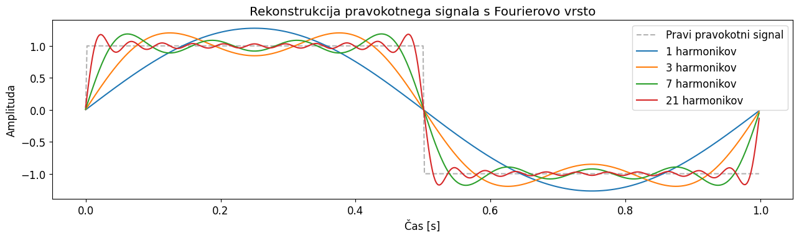
Primer - Kompleksni koeficienti \(c_n\) in negativne frekvence
Izračunamo in vizualiziramo \(c_n\) za pravokotni signal. Pričakujemo:
Neničelne vrednosti le pri lihih \(n\)
Simetričen amplitudni spekter: \(|c_{-n}| = |c_n|\)
Čisto imaginarne vrednosti (signal je realen in lih)
ns = np.arange(-15, 16)
c_n = np.array([koeficient_cn(kvadrat_perioda, t_perioda, T, n) for n in ns])
fig, axes = plt.subplots(1, 2)
ax_spekter(axes[0], ns, np.abs(c_n),
title='Amplituda $|c_n|$', xlabel='Indeks harmonika $n$')
ax_spekter(axes[1], ns, np.imag(c_n),
title='Imaginarni del $c_n$ (realni del je ~nič)',
xlabel='Indeks harmonika $n$', ylabel='Im($c_n$)', color='C1')
plt.tight_layout()
plt.show()
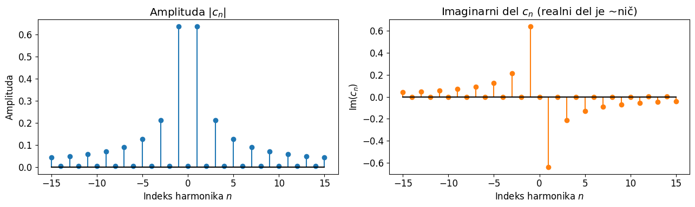
2. del: Od Fourierove vrste do Fourierove integralne transformacije#
Fourierova vrsta velja za periodične signale. Realni izmerjeni signali pa splošno niso periodični - nastopijo le za omejen čas.
Pustimo \(T \to \infty\):
frekvenčni razmik \(\Delta f = 1/T \to 0\);
diskretne frekvence postanejo zvezne;
vsota harmonikov postane integral.
Note
\(F(f)\) je neposredna posplošitev \(c_n\) na zvezne frekvence: pove gostoto harmonične vsebnosti pri frekvenci \(f\).
Primer: koeficienti c_n za pravokoten signal z daljšo periodo \(T\)
Sorazmerno z daljšanjem osnovne periode signala se viša frekvenčna ločljivost:
Začnemo s prikazom iz prejšnjega primera, namesto indeksa harmonikov označimo frekvence v Hz.
T = 1.0
f0 = 1.0 / T
N_max = 15
t_perioda = np.linspace(0, T, 500, endpoint=False)
kvadrat_perioda = np.sign(np.sin(2 * np.pi * f0 * t_perioda))
ns = np.arange(-N_max, N_max + 1) # Indeksi harmonikov
freq = ns / T # Frekvence harmonikov [Hz]
c_n = np.array([koeficient_cn(kvadrat_perioda, t_perioda, T, n) for n in ns])
fig, axes = plt.subplots(1, 2)
ax_spekter(axes[0], freq, np.abs(c_n),
title='Amplituda $|c_n|$', xlabel='Frekvenca $f$ [Hz]')
ax_spekter(axes[1], freq, np.imag(c_n),
title='Imaginarni del $c_n$ (realni del je ~nič)',
xlabel='Frekvenca $f$ [Hz]', ylabel='Im($c_n$)', color='C1')
plt.tight_layout()
plt.show()
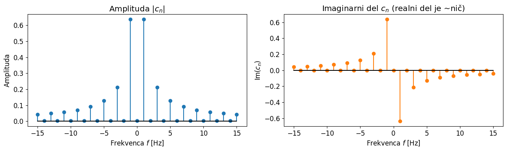
Simetrija FT za realne signale#
Ker so vsi izmerjeni signali realni, velja za njihov spekter: vrednost pri frekvenci \(-f\) je vedno kompleksno konjugirana vrednosti pri \(+f\):
To pomeni, da amplitudni spekter \(|F(f)|\) vsebuje dvojno informacijo - vrednosti pri pozitivnih in negativnih frekvencah sta identični.
Primer - Hermitska simetrija: \(F\{\sin(t)\}\) vs \(F\{e^{it}\}\)
Prikažemo:
\(\sin(2\pi f_0 t)\) (realen, lih) → imaginaren, lih spekter, simetričen amplitudni spekter
\(e^{i 2\pi f_0 t}\) (kompleksen) → enostranski spekter, brez simetrije
N = 200
fs = 100.0 # frekvenca vzorčenja [Hz]
f0 = 5.0 # frekvenca signala [Hz]
t = np.arange(N) / fs
freq = np.fft.fftfreq(N, 1/fs)
F_realen = np.fft.fft(np.sin(2 * np.pi * f0 * t))
F_kompleksen = np.fft.fft(np.exp(1j * 2 * np.pi * f0 * t))
fig, axes = plt.subplots(2, 2, figsize=(13, 7))
for col, (F, oznaka) in enumerate([(F_realen, 'Realen'), (F_kompleksen, 'Kompleksen')]):
ax_spekter(axes[0, col], freq, np.abs(F),
title=f'Amplitudni spekter - {oznaka}', xlim=(-20, 20))
ax_spekter(axes[1, col], freq, np.imag(F),
title=f'Imaginarni del - {oznaka}',
xlim=(-20, 20), ylabel='Im($F$)', color='C1')
plt.tight_layout()
plt.show()
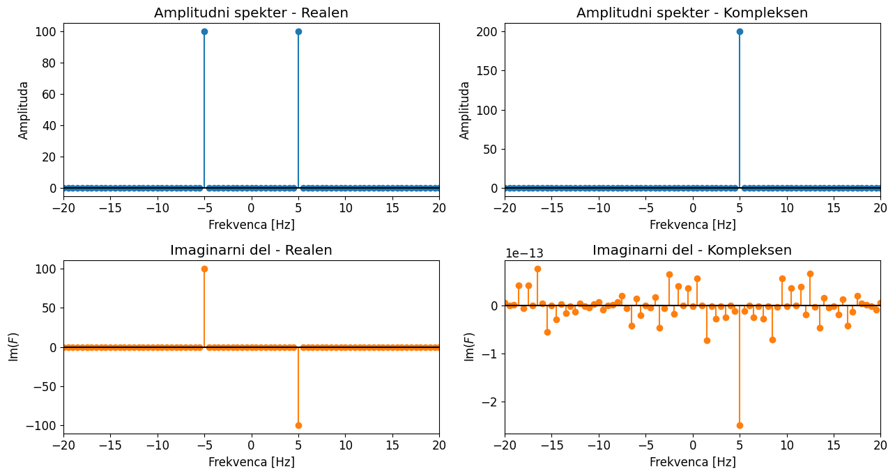
Za analizo realnih signalov torej zadošča enostranski prikaz (pri pozitivnih frekvencah). Tega dobimo z np.fft.rfft.
F_enostranski = np.fft.rfft(np.sin(2 * np.pi * f0 * t))
freq_enostranski = np.fft.rfftfreq(N, 1/fs)
fig, ax = plt.subplots(figsize=(7, 3))
ax_spekter(ax, freq_enostranski, np.abs(F_enostranski),
title=f'Amplitudni spekter - {oznaka}', xlim=(0, 20))
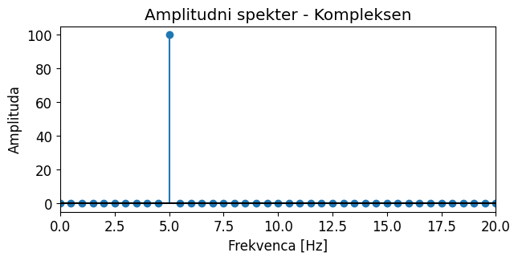
3. del: Diskretna Fourierova transformacija (DFT)#
V praksi imamo vedno opravka z vzorčenimi, končno dolgimi signali - temu namenjena DFT.
Strukturna primerjava#
Časovna domena |
Frekvenčna domena |
|
|---|---|---|
Fourierova vrsta |
Zvezna, periodična |
Diskretna |
Fourierova transformacija |
Zvezna, aperiodična |
Zvezna |
DFT |
Diskretna, periodična (predpostavka!) |
Diskretna |
Primerjajte DFT z enačbo za \(c_n\) iz 1. dela:
Note
Integral postane vsota, zvezni čas \(t\) postane diskretni indeks vzorca \(n\), normalizacija \(1/T\) se prestavi na izhod (ni vgrajena v DFT).
FT je strukturno identična Fourierovi vrsti - to je tudi razlog, zakaj sta si bližje kot DFT in Fourierova integralska transformacija.
DFT obravnava vaših \(N\) vzorcev kot eno periodo neskončno ponavljajočega se signala. Ta predpostavka periodičnosti ima praktične posledice - gl. razlitje spektra (spectral leakage) spodaj.
Primer - Koeficienti Fourierove vrste in DFT
Primerjava vrednosti Fourierove vrste z rezultati DFT
# Parametri signala
A = 5.0
f0 = 1.0
T = 1.0 / f0
# Parametri vzorčenja
fs = 20.0
N = 20 # 1 s vzorčenja
t = np.arange(N+1) / fs # Vključimo T, da lahko numerično integriramo celo periodo, kar je pomembno za koeficiente c_n
sig = A * np.sin(2 * np.pi * f0 * t)
Koeficienti Fourierove vrste
N_harmonikov = 10 # 10*f0 = 10 Hz, enako fs/2
c_n = [koeficient_cn(sig, t, T, n) for n in range(-N_harmonikov, N_harmonikov+1)]
freq_cn = np.array([n / T for n in range(-N_harmonikov, N_harmonikov+1)])
fig, ax = plt.subplots(1, 2)
ax_spekter(ax[0], freq_cn, np.abs(c_n),
title='Amplituda $|c_n|$', xlabel='Frekvenca $f_n$')
ax_spekter(ax[1], freq_cn, np.angle(c_n), color='C1',
title='Faza $\\angle c_n$', xlabel='Frekvenca $f_n$')
plt.show()
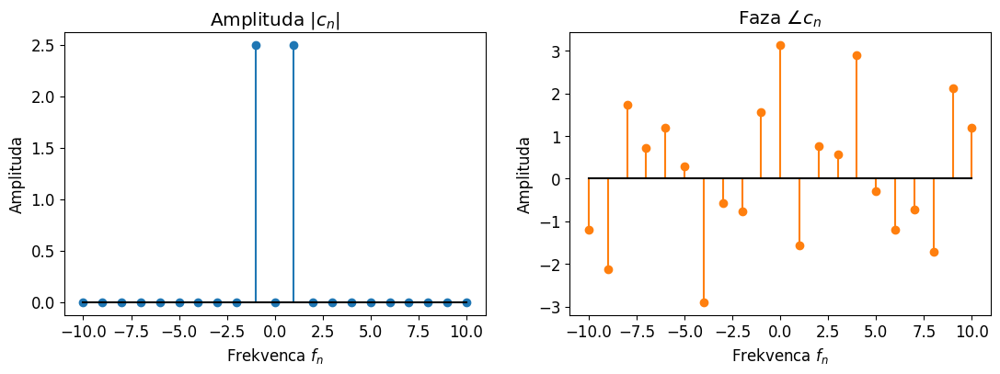
Rezultat FFT
t = np.arange(N) / fs # Ne vključimo T, kar je bolj primerno za FFT, ki predpostavlja periodičnost signala v vzorčnem intervalu
sig = A * np.sin(2 * np.pi * f0 * t)
F = np.fft.fft(sig) / N # Normiranje komentiramo spodaj
freq = np.fft.fftfreq(N, 1/fs)
fig, ax = plt.subplots(1, 2)
ax_spekter(ax[0], freq, np.abs(F),
title='Amplituda $|F_n|$', xlabel='Frekvenca $f_n$')
ax_spekter(ax[1], freq, np.angle(F), color='C1',
title='Faza $\\angle F_n$', xlabel='Frekvenca $f_n$')
plt.show()
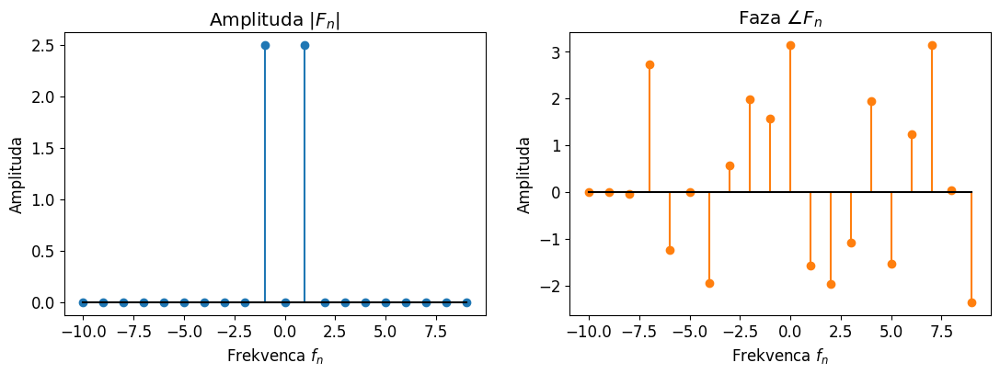
Razlog za razlike v faznih kotih je majhna razlika v časovnih vektorjih + numerična integracija.
freq_cn[11], np.rad2deg(np.angle(c_n)[11])
(np.float64(1.0), np.float64(-90.0))
freq[1], np.rad2deg(np.angle(F)[1])
(np.float64(1.0), np.float64(-90.00000000000001))
Normiranje: kako iz DFT dobimo fizikalne amplitude#
Surovi rezultat np.fft.fft ni normiran. Da dobimo fizikalne amplitude, je v rabi:
Amplitudno normiranje (
FFT / N):\(\sin\) z amplitudo \(A\) \(\rightarrow\) dva vrhova \(A/2\) pri \(\pm f_0\)
(skladno z \(|c_{\pm n}| = A/2\) iz Fourierove vrste)
“Inženirsko” normiranje za realni signal (
RFFT/ N, nato[1:-1] *= 2):\(\sin\) z amplitudo \(A\) \(\rightarrow\) en vrh \(A\) pri \(f_0\).
Množenje z 2 je utemeljeno s Hermitsko simetrijo: zavržemo simetrične amplitude na negativnem delu frekvenčne osi s tem množenjem ohranimo energijo signala.
DC (\(k=0\)) in Nyquist (\(k=N/2\)) nimata negativnega para, zato teh ne množimo.
Parsevalov teorem pravi, da mora moč iz spektra ustrezati moči časovnega signala - to je praktičen preizkus pravilnosti normiranja.
Primer - Normalizacija in Parsevalov teorem
Primerjamo obe normalizacijski konvenciji na primeru sinusa z amplitudo \(A\) in preverimo Parsevalov teorem za vsako od njiju.
A = 5.0
f0 = 10.0
N = 200
fs = 200
t = np.arange(N) / fs
sig = A * np.sin(2 * np.pi * f0 * t)
F_dvostranski = np.fft.fft(sig) / N
freq_dvostranski = np.fft.fftfreq(N, 1/fs)
F_enostranski = np.fft.rfft(sig) / N
F_enostranski[1:-1] *= 2 # Normiramo enostranski spekter (NE DC, NE Nyquist)
freq_enostranski = np.fft.rfftfreq(N, 1/fs)
fig, axes = plt.subplots(1, 2)
ax_spekter(axes[0], freq_dvostranski, np.abs(F_dvostranski),
title=f'Dvostranski spekter (konvencija FT)\nVrthova pri A/2 = {A/2:.1f}',
xlim=[-50, 50])
ax_spekter(axes[1], freq_enostranski, np.abs(F_enostranski),
title=f'Enostranski spekter (inženirska konvencija)\nVrh pri A = {A:.1f}',
xlim=[0, 50], color='C1')
plt.tight_layout()
plt.show()
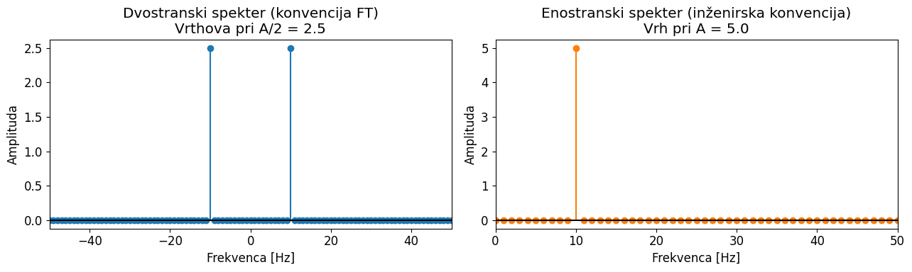
# Moč v časovni domeni
moc_cas = np.mean(sig**2)
print(f"Moč v časovni domeni: {moc_cas:.4f} (teoretično A^2/2 = {A**2/2:.4f})")
Moč v časovni domeni: 12.5000 (teoretično A^2/2 = 12.5000)
# Dvostranski spekter (konvencija Fourierove transformacije)
F_dvo = np.fft.fft(sig) / N
freq_dvo = np.fft.fftfreq(N, 1/fs)
moc_dvostranski = np.sum(np.abs(F_dvo)**2)
print(f"Moč iz dvostranskega spektra: {moc_dvostranski:.4f} (teoretično A^2/2 = {A**2/2:.4f})")
Moč iz dvostranskega spektra: 12.5000 (teoretično A^2/2 = 12.5000)
# Enostranski spekter
moc_enostranski = (np.abs(F_enostranski[0])**2
+ np.sum(np.abs(F_enostranski[1:-1])**2) / 2
+ np.abs(F_enostranski[-1])**2)
print(f"Moč iz enostranskega spektra: {moc_enostranski:.4f} (teoretično A^2/2 = {A**2/2:.4f})")
Moč iz enostranskega spektra: 12.5000 (teoretično A^2/2 = 12.5000)
Pripravimo funkcijo za ustrezno normirani enostranski amplitudni spekter (RFFT)#
def rfft_enostranski(x, fs):
"""Vrne ustrezno normiran enostranski spekter signala x, vzorčenega s frekvenco fs."""
N = len(x)
F = np.fft.rfft(x) / N
F[1:-1] *= 2 # Normiramo enostranski spekter (NE DC, NE Nyquist)
freq = np.fft.rfftfreq(N, 1/fs)
return freq, F
Frekvenčna ločljivost DFT#
Spomnimo se vpliva podaljševanja periode \(T\) Fourierovo vrsto (prehod na integralsko transformacijo):
Enako velja tudi za DFT: ločljivost v frekvenčni domeni je obratno sorazmerna periodi vzorčenja \(T\)
Najvišja frekvenca DFT#
Drugi parameter, ki določa diskretne frekvence pri DFT, je Nyquistov kriterij:
kjer je \(f_s = 1 / \Delta t\) frekvenca vzorečnja.
Poglejmo si oboje na spodnjem primeru (natančneje bomo to obravnavali pri vaji iz DFT).
fs = 10.0 # Hz
T = 1.0 # s
N = int(fs * T) # število vzorcev (vzorčimo periodo T s frekvenco fs)
freq = np.fft.rfftfreq(N, 1/fs)
print(f"Frekvence enostranskega spektra: {freq}")
print(f"Frekvenčna ločljivost (1/T = 1/{T:.1f} Hz): {freq[1] - freq[0]:.2f} Hz")
print(f"Najvišja frekvenca (Nyquist: fs/2 = {fs:.1f}/2): {freq[-1]:.2f} Hz")
Frekvence enostranskega spektra: [0. 1. 2. 3. 4. 5.]
Frekvenčna ločljivost (1/T = 1/1.0 Hz): 1.00 Hz
Najvišja frekvenca (Nyquist: fs/2 = 10.0/2): 5.00 Hz
3.3 Razlitje spektra in predpostavka periodičnosti#
Note
DFT predpostavlja, da vaših \(N\) vzorcev tvori natanko eno periodo signala. Če frekvenca signala ne vsebuje celoštevilskega števila period v oknu, DFT »vidi« nezveznost na robu - in to “razlije” energijo po vseh frekvencah. To imenujemo razlitje spektra (angl. spectral leakage).
Primer - Razlitje spektra: celoštevilsko vs. neceloštevilsko število period
Primerjamo amplitudni spekter \(\sin\) funkcije pri periodi vzorčenja, ki je točni večkratnik osnovne periode \(1/f\), s primerom, kjer to ni izpolnjeno.
N = 1000
fs = 500.0
t = np.arange(N) / fs
f_celo = 50.0 # celoštevilsko število period v oknu
f_necelo = 53.7 # neceloštevilsko število period
freq, F_celo = rfft_enostranski(np.sin(2 * np.pi * f_celo * t), fs)
_, F_necelo = rfft_enostranski(np.sin(2 * np.pi * f_necelo * t), fs)
fig, axes = plt.subplots(1, 2)
ax_spekter(axes[0], freq, np.abs(F_celo),
title=f'f = {f_celo} Hz - celoštevilsko število period\n(čist spekter)',
xlim=[0, 150], stem=False)
ax_spekter(axes[1], freq, np.abs(F_necelo),
title=f'f = {f_necelo} Hz - neceloštevilsko število period\n(razlitje spektra)',
xlim=[0, 150], stem=False)
plt.tight_layout()
plt.show()
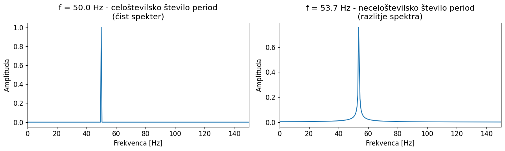
4. del: Amplitudni in fazni spekter#
Rezultat DFT pri vsaki frekvenci \(k\) je kompleksno število. Iz njega preberemo dve fizikalni količini:
Amplitudni spekter (
np.abs(F)): pove, koliko posamezne frekvence je v signalu prisotne.Fazni spekter (
np.angle(F)): pove, kdaj posamezna komponenta doseže vrh glede na \(t = 0\) - torej njen časovni zamik.
Faza čistega sinusa#
Sinus je realna, liha funkcija, zato pričakujemo fazo \(-90°\) pri \(f_0\) (ali \(+90°\) pri \(-f_0\)).
Povsod drugje, kjer je amplituda nič, faza ni določena. V praksi vidimo floating-point zaokrožitvene napake na ravni \(\approx 10^{-16}\).
Faza je fizikalno smiselna le tam, kjer je amplituda znatna.
Primer - Fazni spekter čistega sinusa: signal in šum zaokrožitvenih napak
Prikažemo amplitudni in fazni spekter čistega sinusa. Opazujemo fazo pri \(f_0\) in interpretiramo navidezno »naključne« faze pri vseh ostalih frekvencah.
N = 500
fs = 1000.0
f0 = 50.0
t = np.arange(N) / fs
sig = np.sin(2 * np.pi * f0 * t)
freq, F = rfft_enostranski(sig, fs)
idx_f0 = np.argmin(np.abs(freq - f0))
print(f"Faza pri f0 = {f0} Hz: {np.rad2deg(np.angle(F[idx_f0])):.2f}° (pričakovano: -90°)")
print(f"Amplituda pri f0: {np.abs(F[idx_f0]):.4f} (pričakovano: 1.0)")
Faza pri f0 = 50.0 Hz: -90.00° (pričakovano: -90°)
Amplituda pri f0: 1.0000 (pričakovano: 1.0)
fig, axes = plt.subplots(1, 2)
ax_spekter(axes[0], freq, np.abs(F), title='Amplitudni spekter', stem=False)
ax_faza(axes[1], freq, F, title='Fazni spekter')
axes[1].scatter(f0, -90, facecolors='none', edgecolors='k', linewidths=1.5,
label='Pričakovana faza pri f0')
axes[0].set_xlim(0, 100)
axes[1].set_xlim(0, 100)
axes[1].legend();
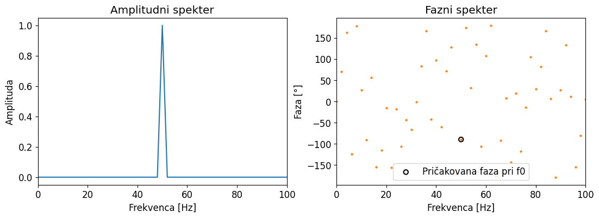
4.2 Faza kot časovni zamik#
Faza pri frekvenci \(f\) neposredno kodira časovni zamik tiste harmonične komponente. Ključna praktična posledica lastnosti časovnega zamika: zamik signala v času ne spremeni amplitudnega spektra - spremeni le fazni spekter, sorazmerno z zamikom in frekvenco.
Dve meritvi istega signala z različnim zamikom imata torej enak amplitudni spekter, a različna fazna spektra.
Primer 4.2 - Časovni zamik in njegov vpliv na fazni spekter
Isti sinus zamaknemo za različne vrednosti \(t_0\) in opazujemo, da se amplitudni spekter ne spremeni, faza pri \(f_0\) pa se linearno premakne.
N = 500
fs = 1000.0
f0 = 50.0
t = np.arange(N) / fs
zamiki = [0.0, 0.002, 0.005] # sekunde
# Za vsak zamik: izračunamo signal in spekter
rezultati = []
for zamik in zamiki:
sig = np.sin(2 * np.pi * f0 * (t - zamik))
freq, F = rfft_enostranski(sig, fs)
rezultati.append((zamik, freq, F))
fig, axes = plt.subplots(1, 2)
for zamik, freq, F in rezultati:
idx = np.argmin(np.abs(freq - f0))
faza_f0 = np.degrees(np.angle(F[idx]))
axes[0].plot(freq, np.abs(F), label=f'zamik = {zamik*1000:.0f} ms')
axes[1].scatter(freq[idx], faza_f0, s=80,
label=f'zamik={zamik*1000:.0f}ms → {faza_f0:.1f}°')
ax_spekter(axes[0], title='Amplitudni spekter (nespremenjen pri časovnem zamiku)', xlim=[0, 150])
ax_faza(axes[1], title='Faza pri $f_0$ za različne časovne zamike', xlim=[f0 * 0.8, f0 * 1.2])
axes[0].legend()
axes[1].legend()
plt.tight_layout()
plt.show()
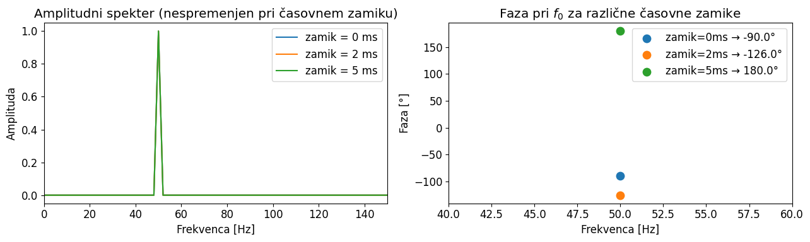
5. del: Vloga faze v strukturi signala#
Note
Dva signala sta lahko imata enaka amplitudna spektra, a sta v časovni domeni popolnoma različna - ker se razlikujeta v faznih spektrih.
Amplitudni spekter pove katere frekvence so prisotne.
Fazni spekter pove kako so organizirane v času.
Primer 5.1 - Enak amplitudni spekter, različna faza: dve harmonični komponenti
Sestavimo štiri signale z enakima \(f_1\) in \(f_2\) ter enakima amplitudama, a različnimi faznimi kombinacijami. Amplitudni spekter je v vseh primerih enak, časovne oblike pa so med seboj povsem različne.
N = 1024
fs = 1000.0
t = np.arange(N) / fs
f1, f2 = 50.0, 120.0
A1, A2 = 1.0, 0.7
fazne_kombinacije = [
(0, 0, 'Oba začneta pri 0° - poravnana'),
(0, 180, 'f₂ zamaknjen za 180° - nasprotna faza pri t=0'),
(45, 135, 'Poljubna fazna razlika'),
]
sigs = [A1 * np.sin(2*np.pi*f1*t + np.radians(faz1))
+ A2 * np.sin(2*np.pi*f2*t + np.radians(faz2))
for faz1, faz2, _ in fazne_kombinacije]
fig, ax = plt.subplots(figsize=(13, 4))
for sig, (_, _, naslov) in zip(sigs, fazne_kombinacije):
ax.plot(t[:300], sig[:300], label=naslov)
ax.set_xlabel('Čas [s]')
ax.legend()
plt.title(f'Enak amplitudni spekter ($f_1$={f1:.0f} Hz, $f_2$={f2:.0f} Hz), različna faza', y=1.02);
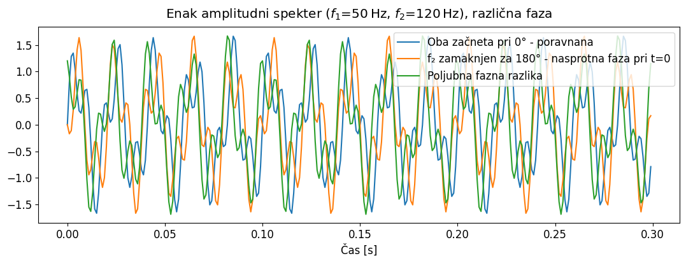